Available on the app store
A simple and beautiful social analytics tool.
Tired of hopping back and forth between social apps? Static is an easy to use, beautiful display for monitoring the pulse of your favourite social media channels. Thanks to all your support and requests we have made some major changes we hope you will enjoy.
Beautiful design.
With carefully thought-out design, Static makes it easy for you to keep control.
Easy setup.
Easily add your favourite social media channels and instantly start tracking your stats.
Make a request.
Feel free to make a feature request and contact our support team about any issues.


New features
Thanks to our users, Static has grown even better with some really great additional features.
- Push Notification Alerts
- Email Reports
- Graphs
- Additional Social Channels
- Detail screen
- Subscription for unlimited accounts
- Download Now
Alerts & Reports
Be alerted by push notifications if you are losing followers, likes or anything indicating you may have done something to give your followers a change of heart.
Receive daily, weekly or monthly email reports.
Download now
Beautiful Graphs
Look at your statistics through a beautiful graph and easily navigate between your accounts.
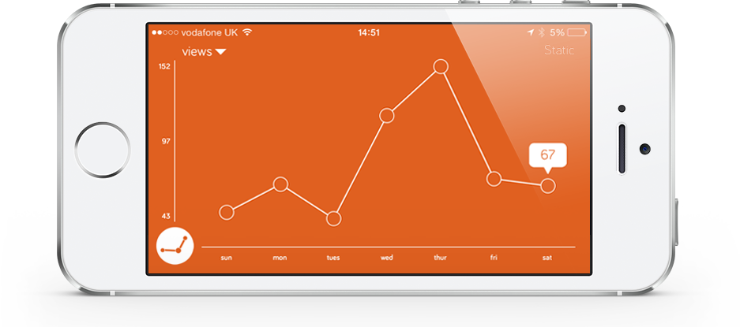
Screenshots
We are always listening to what our users are saying and are constantly adding new feaures and improving functionality.
- 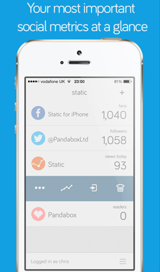 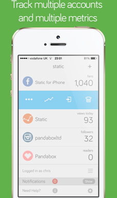 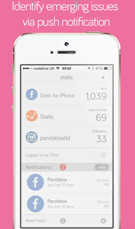
- 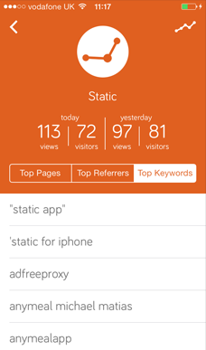 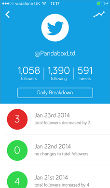 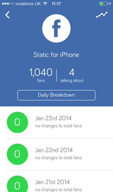
-
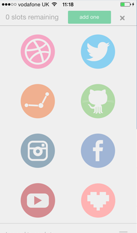
 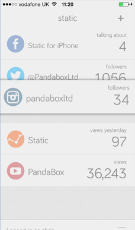
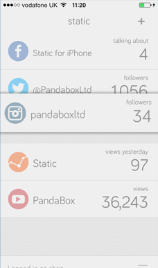
- 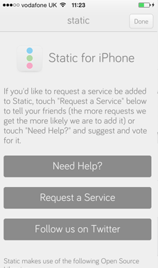 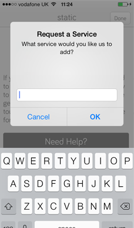 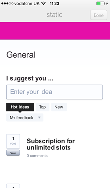
Social Channels currently available to track.
Facebook Twitter Google Analytics Youtube Feedpress Instagram Dribble Github foursquared Google+ Linkedin Tumblr VK Soundcloud Behance Vimeo